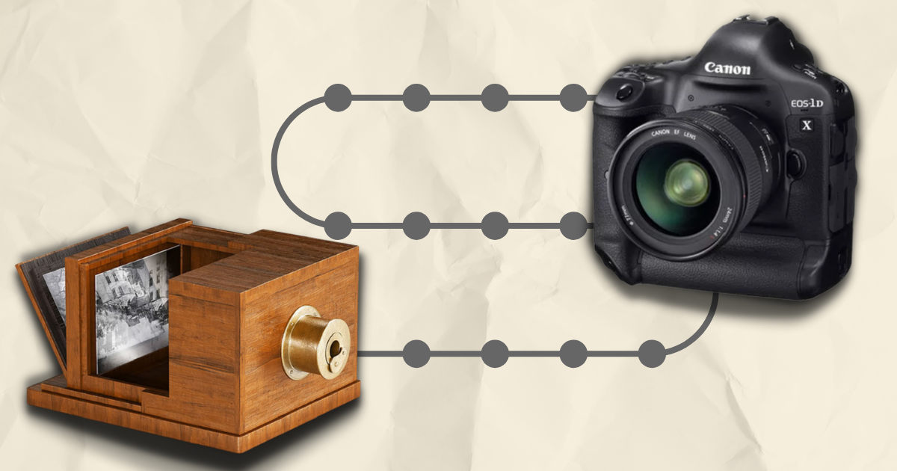
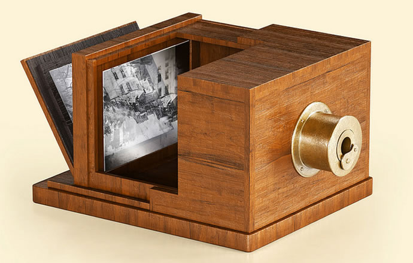

A evolução das cameras fotograficas

A primeira fotografia clicada data de 1826 de autoria do francês Joseph Nicéphore Niépce. No entanto, não podemos chamá-lo de criador da fotografia.
Pois, a criação da fotografia só foi possível devido a diversas descobertas feitas por químicos e físicos, até a sua primeira realização. Mas, isso é um assunto para um novo post. Agora vamos traçar uma linha com a evolução das câmeras fotográficas do século XIX aos dias de hoje.
As primeiras câmeras fotográficas
Daguerreótipos
Percursor do cinema moderno, os Daguereótipos foram antes de tudo uma colab entre Niépce e Louis Daguerre.
Esta placa de cobre revestida com prata e exposta ao vapor de iodo antes de ser exposta à luz, foi em suma um marco para a fotografia.
Para gravar a imagem na placa, os primeiros daguerreótipos tiveram que ser expostos à luz por até 15 minutos.
Este método se tornou muito popular. Por fim, sendo substituído apenas em 1850 pelas placas de emulsão.

1839, Daguerreótipo: o primeiro equipamento fotográfico criado em escala comercial.
Placas de Emulsão
As placas de emulsão ganharam espaço por serem mais baratas que os Daguerreótipos assim como possuírem um tempo muito menor de exposição para a gravação da imagem, que agora era de apenas 3 minutos. Também nesta época, buscando a melhora do foco, adicionaram os foles às câmeras foco.
O menor tempo de exposição tornou as placas de emulsão mais adequadas para a produção de retratos, que até então era a fotografia mais realizada na época. Muitas fotos da guerra civil americana foram produzidos com as placas úmidas.
Estas placas úmidas usavam um processo de emulsão chamado de processo de colódio.
Dois tipos comuns de placas de emulsão são o ambrótipo e o tipo estanho. Os ambrótipos usavam uma placa de vidro em vvez da polaca de cobre dos Daguerreótipos. Por outro lado os tipos de lata usavam as placas de estanho.